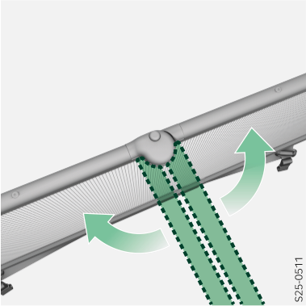
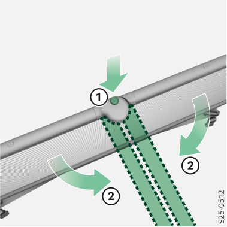

Dérouler

Ouvrir les bras de la barre transversale jusqu’à ce que vous entendiez un déclic du bouton de verrouillage.
Plier

Appuyer sur le bouton de verrouillage et rabattre les bras de la barre transversale l’un contre l’autre.